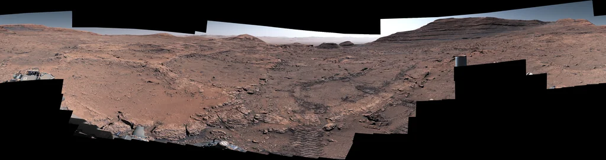

Every card has the same five slots in the same order: station and kind, task, measured conditions, photo, source. A missing value or photo keeps its slot and says so.
Mock dataArrival times come from a draft planner run, tagged mock. Conditions are the measured REMS and RAD hour means of sol 4600 for the arrival hour.
S3Ridge on the Curiosity pathrelief +3.6mderived arrive 10:06LMSTmock
Task
Measure the direction and the tilt of the ridge wall at three points with a compass clinometer, and mark each point on the map.
Measured on sol 4600
Ground brightness temperature
-21.1°Csol 4600, 10:00 LMST
Air temperature
-51.6°Csol 4600, 10:00 LMST
Pressure
740.4Pasol 4600, 10:00 LMST
UV (A+B+C)
---NO DATAsol 4600, 10:00 LMST
Dose rate, detector B
6.88µGy/hsol 4600, 10:00 LMST

Context image, not taken at this station. PIA26559, NASA/JPL-Caltech/MSSS. Resized.S7Hollow off the path - new samplerelief -1.1mderived arrive 11:49LMSTmock
Task
Sample a hollow that the rover did not visit: dig a trench 20 cm deep and bag material from the top and from the bottom.
Measured on sol 4600
Ground brightness temperature
-9.0°Csol 4600, 11:00 LMST
Air temperature
-40.5°Csol 4600, 11:00 LMST
Pressure
731.7Pasol 4600, 11:00 LMST
UV (A+B+C), lower bound
7.89W/m²sol 4600, 11:00 LMST
Dose rate, detector B
7.01µGy/hsol 4600, 11:00 LMST
No photo picked
Off the rover path, so no rover photo exists here. The team may add one picked by hand.